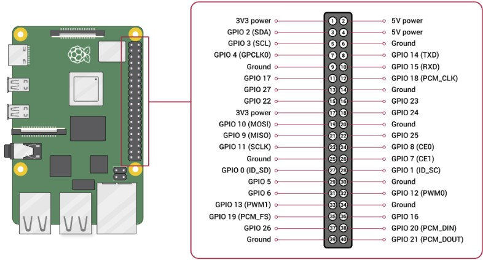

Settings - Devices

On this Settings screen you can configure devices connected to the Raspberry Pi through GPIO of the 40-pin header.

IMPORTANT: To preserve any configurations over server restart, you need to store the configuration and activate Start Server with stored Configuration
Creating a Device
To create a new device, select one of the preconfigured Device Types and enter a unique ID by which the device will be identified within raspiCamSrv.
Pressing Create will open the Device Configuration where the device can be configured in detail.
A graphic with wiring information in the upper right area will help connecting the device.
Configuring a Device
In raspiCamSrv, GPIO-connected devices are controlled using the gpiozero library which is deployed with Raspberry Pi OS.
raspiCamSrv supports all 'regular' input and output device classes of gpizero as well as StepperMotor which is an own extension of gpiozero.OutputDevice.
- Config Status
shows whether the device is completely configured.
This requires normally, that valid numbers have been set for all pin parameters. - Device Type
shows the class name through which the device is accessible. - Usage
shows whether the device is an Input or Output device.
This information is used when Triggers and Actions are configured where either one or the other can be selected. - gpiozero Doc
A link to the gpiozero page for the specific class can help understanding the meaning of the different interface parameters as well as for the specific behavior of the class.
Only the link for the StepperMotor links to a raspiCamSrv page with information about this class.
Typically, most of the device types have an individual set of parameters with different data types and value ranges.
These parameters are preconfigured in raspiCamSrv (see Device Type Configuration) and are shown with their default values from gpiozero.
In almost all cases, only the parameters for the GPIO pins need to be configured.
Only, when all GPIO pins are configured, the Config Status is set to "OK", which is a precondition that the device can be used.
Device Overview
The right side of the dialog shows an overview of all configured devices with their associated GPIO pins and their Config Status
The information about Unused GPIO Pins can help finding places for new devices.
This information only considers the devices configured in raspiCamSrv.
Modifying Device Configuration
You can modify configuration parameters for a device after selecting the device ID in the Device Configuration section.
If a device is selected, also the device Type and the image in the upper area are adjusted.
The ID of a device can not be modified.
Deleting a Device
The Delete button allows deletion of the selected device. This requires an additional confirmation.
If a device is used in one of the Triggers or Actions configurations, it cannot be deleted. An error message will be shown only after deletion has been confirmed.
Testing a Device
After a device has been configured, it should be tested that it is working correctly.
When the Config Status is "OK", the Device Test section is shown, which initially consists only of the Test button.
When it is pressed, a preconfigured set of test steps will be executed.
IMPORTANT: Before pressing Test, make sure that any moving devices (e.g. Motors, Servos) can move freely.
After the test is completed, the return values of the configured test methods will be shown.
For a test either the entire test or the individual steps may have preconfigured durations. So you need to wait until the test is completed and observe the device.
Calibrating a Device
Some devices require state tracking and, therefore, calibration.
This applies currently to the StepperMotor:
The StepperMotor itself does not have knowledge about its current position and when the class is instantiated, the current_angle is set to zero.
For usage of the StepperMotor it is, however, essential to know the position at any time.
It is, therefore, necessary to
- set a certain state as reference "Zero"
- track and memorize any movements
- set the last state whenever the device class is instantiated
Devices requiring this procedure have an element "calibration" in their Device Type Configuration.
If such a device is configured, a Calibrate button will be shown.
Pressing Calibrate will show additional buttons for calibration as well as the current state (current_angle for StepperMotor):
 You can now change the device status using the arrow buttons until you reach the desired zero.
You can now change the device status using the arrow buttons until you reach the desired zero.
Pushing OK will then set the current state as reference and hide the calibration buttons.
raspiCamSrv will track all status changes in a JSON file named after the device ID:

ATTENTION: If you are using such devices in any triggered Actions you should avoid shutting down the server while event handling is activated. The system might not be able to memorize the latest device state and may, therefore start with an incorrect state.
Device Type Configuration
The gpiozero device types, supported by RaspiCamSrv are preconfigured in the file gpioDeviceTypes.py.
Below is an example for the DistanceSensor:
gpioDeviceTypes = [
{
"type":"DistanceSensor",
"usage":"Input",
"docUrl": "https://gpiozero.readthedocs.io/en/stable/api_input.html#distancesensor-hc-sr04",
"image": "device_DistanceSensor.jpg",
"params": {
"echo": {
"value": "",
"type": "int",
"min": 0,
"max": 27,
"isPin": True
},
"trigger": {
"value": "",
"type": "int",
"min": 0,
"max": 27,
"isPin": True
},
"queue_len": {
"value": 9,
"type": "int",
"min": 0,
"max": 99
},
"max_distance": {
"value": 1.0,
"type": "float",
"min": 0.0,
"max": 100.0
},
"threshold_distance": {
"value": 0.3,
"type": "float",
"min": 0.0,
"max": 100.0
},
"partial": {
"value": False,
"type": "bool"
}
},
"testMethods":[
"distance",
"value"
],
"events":[
"when_in_range",
"when_out_of_range"
],
"eventSettings":{
"threshold_distance": 0.0
},
"control":{
"bounce_time": 0.0
}
},
]
The different elements are used for different purposes:
- type
identifies the class name for the device type. - usage
distinguishes Input and Output devices - docURL
is the URL for class documentation - image
identifies the image shown in the dialog - params
characterizes the class constructor interface with parameter name, default value, type (with some non-Python declarations) as well as the valid range.
The "isPin" sub-element identifies attributes which correspond to GPIO pins. - testMethods
is a list of test methods, if necessary with parameters, which are executed during the test. - testDuration or testStepDuration specify the duration of the entire test or of every test step.
- events
occur in Input devices and identify events which are captured by the device class and to which callback routines can be assigned.
This will be used in the specification of Triggers. - eventSettings
is a list of parameter assignments which will be set before callbacks are assigned to the event parameters.
An example is thethreshold_distancewhich is required forDistanceSensorto distinguish between in_range and out_of_range. - actionTargets
occur in Output devices and identify methods which can be used in Actions.
Whereas the sub-element "method" identifies the method name (which can be a method or a property which raspiCamSrv determines through inspection), the "params" element specifies the parameters which can be configured for the method call or the property assignment.
These parameters serve also as 'templates' for type checks which are done during Action configuration. - control elements
which can occur as sub-elements of "actionTarget" for Output devices as well as for Input devices, are not part of the class interface but are used to control specific behavior in raspiCamSrv.
For input devices it can, for example specify thebounce_timefor software controlled bouncing suppression beyond that what might already be provided by gpiozero.
For Output devices and a specific action target, it can, for example specify a duration for which the action shall last, for example how long an LED shall be enlighted.
40-Pin GPIO Header
